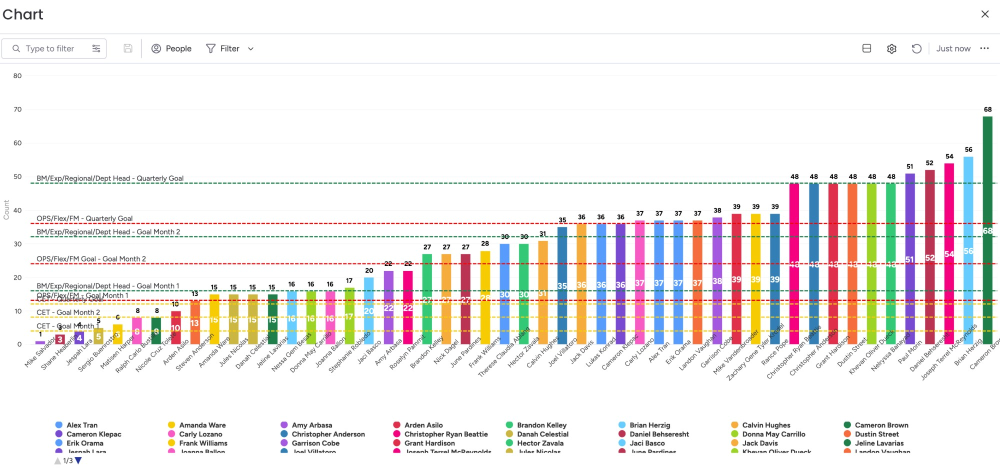
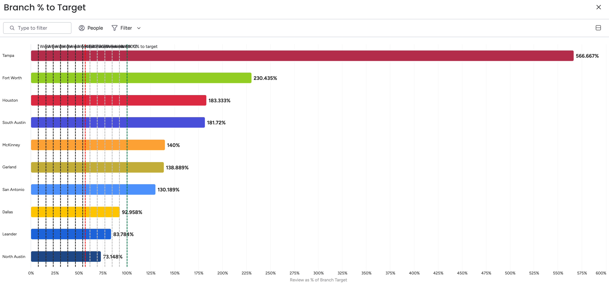
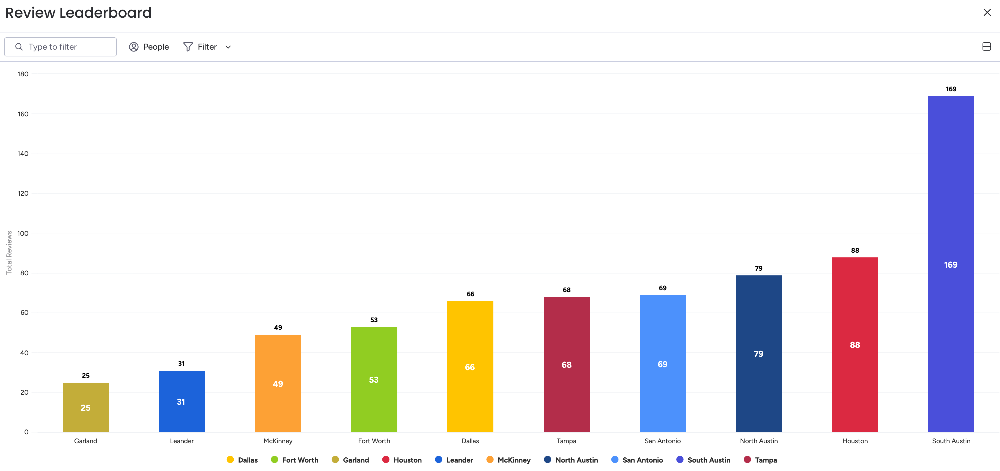

Q1 FY'26 Quarterly Goal Review — Roundtable Packet
Single canonical pre-read for the 4/28-29 leadership QGR. Hybrid format: embedded summaries below + deep links into the full artifacts.
Q1 FY'26 lands a B — strong market read on top of a C absolute miss against budget.
Revenue +6.9% YoY, NOI +37.5% YoY, margin +1.8 pts. Below internal budget on revenue and personnel, but solidly above the moving-industry benchmark in a contracting market. Trend lens reinforces the B grade — Q1 momentum is back after a soft Q4 close.
Executive Summary — Q1 at a Glance
The numbers below are the headline references for the QGR conversation. Each is sourced from the deeper component cards beneath — every section also carries a 📍 source tag so any number can be traced to its origin in seconds.
📍 Source map
Quarter Highlights
The big moves of Q1 — branch-side and department-side together. The wins worth opening on.
- 92 — All-time high Customer NPS. Highest company NPS in Einstein history.
- 1 — Claim, entire quarter. Going Green on Driver's Ed (BBE) theme.
- 35 — Magic Moments delivered. Up from 10 last quarter.
- Phase 1 — Variable Pricing LIVE. Day-of-week pricing rolled out company-wide.
- 2 — Training classes done. Sales and Claims teams grew this quarter.
- 3 days — All-Manager Conference, Waco. All-Manager session, April 2-4.
- Live — Legends App posted. Mover-facing app shipped.
Strategic Foundation — Flywheel
★ Primary Lens · Most Referenced
The Flywheel — Six Components Compounding
Great Movers → Smart Move Experience → Trust → Demand → Capacity → Reinvest → back to Great Movers. AI = cross-functional enabler. Scoring 1–10 per component (Rob Lynch session 4/14): ≥7 reads Green, 5–6 Amber, <5 Red.
Great Movers 96% home-grown leadership
~6/10 mover quality
Move Experience Smart Move System live
NPS holding above benchmark
at Scale 4.9★ on 8,000+ reviews
strongest leg of the wheel
40% target · funnel reset
Capacity TUR 66.3% (target 65%+)
midweek fill = lever
in People + Tech Prosper VCFO live
$10,456 profit/truck
- Five Strategic Pillars (locked 4/14 with Rob Lynch) — the evaluation lens for grading rocks and shaping Q2. Open Live Pillars →
- PACe — E=MCash² — Susko's 12-box Process Accountability Chart. Box 2 (Convert on Demand) is the lone Red and the highest-leverage fix this quarter. Open Live PACe →
📍 Source
Component Cards — The Q1 Story in Ten Pieces
Each card embeds the headline data + key numbers + a one-click deep link to the full artifact. Read left-to-right, top-to-bottom.
Component 1
Financial Analysis — Revenue, NOI, Conversion, Marketing
Revenue $5.47M (+6.9% YoY), NOI $454K (+37.5%), margin 8.31% (+1.8 pts). Marketing efficiency improved: $219K spend (-8% YoY) generated $27.54 booked+serviced per dollar (+30%). The 4/5 contact-capture funnel change reset conversion — Cohort A (pre) 35.5%, Cohort B (post) 27.4%; the latter is the Q2 baseline. Sessions caveat: total sessions -17% YoY but call/quote form fills +8-14 pts. Likely AI search effect (Gemini, Claude reading content and answering users without site visits) — needs Kickpoint confirmation.
(Booked $ + Serviced $) / (Quote $ + Booked $ + Serviced $). The Presentation's two N. Austin numbers are both $-basis but measure different things: §3.2 (-14.5 pts) = full Q1'26 vs Q1'25 YoY; §3.5 (-8.6 pts) = portion attributed to the +8.3% price step.
📍 Source
| Cohort | Window | $ Conversion | Read |
|---|---|---|---|
| Cohort A — Pre-funnel | Feb 1 – Apr 4 | 35.5% | Old normal — directly comparable to Q4'25 |
| Cohort B — Post-funnel | Apr 5 – Apr 18 | 27.4% | New baseline; lead volume +58% from contact-capture gate |
| Direct-Book subset | Q1 FY'26 (full) | ~86% | Self-serve auto-booking flow — small share of leads, very high close |
Component 2
Personnel & Availability — Cameron's Critical #
95% of personnel budget company-wide (C grade), under in 5/5 biweekly periods. Leander (72%), Houston (77%), and South Austin (86%) all chronic-F — availability-constrained, severity ranking Leander > Houston > S. Austin. Leander + Houston confirmed via the dual-gate availability test, ~$135K of the $340K Q1 NOI miss. Confirmed at 4/27 leadership review. Houston caveat: TUR plan of 92% was aggressive given the availability ramp — part of the miss is plan-side. Same lever for all three: hire-rate / Indeed funnel review, priority calibrated to severity.
📍 Source
| Branch | 2/9–2/22 | 2/23–3/8 | 3/9–3/22 | 3/23–4/5 | 4/6–4/19 | Q1 Avg | vs. 100% | Grade |
|---|---|---|---|---|---|---|---|---|
| North Austin | 107% | 118% | 95% | 101% | 106% | 105% | A | |
| South Austin | 85% | 88% | 80% | 84% | 92% | 86% | F | |
| Leander 🔴 | 72% | 69% | 67% | 83% | 67% | 72% | F | |
| San Antonio | 98% | 96% | 95% | 105% | 90% | 97% | C | |
| Houston 🔴 | 69% | 73% | 73% | 92% | 80% | 77% | F | |
| Dallas | 94% | 105% | 95% | 103% | 113% | 102% | B | |
| McKinney | 121% | 108% | 85% | 111% | 98% | 105% | A | |
| Fort Worth 🟦 | 130% | 132% | 116% | 103% | 120% | 120% | A++ over | |
| Garland 🟦 | 137% | 107% | 112% | 116% | 103% | 115% | A++ over | |
| Tampa | 116% | 122% | 84% | 104% | 103% | 106% | A (calibration only) | |
| Company | 95% | 97% | 87% | 98% | 96% | 95% | C |
Bar shows Q1 average vs. 100% Forecaster Budget (tick at 100%). <85% 85–99% ≥100%
📍 Source
Component 3
Rocks Scorecard — Per-Leader Grades
11 leaders, 57 rocks (51 graded + 6 Controllers ungraded — pending Cameron's final cut). Cameron + Paul + Controllers grade live at QGR Days 2-3. Two Cameron overrides locked: Cameron #1 Fleet Safety SG→G (Driver's Ed: 19.8% at-risk doesn't hit <10% SG bar), Mike #5 Sell Trucks R→G ($58K late-Q sales).
📍 Source
listComments API · Cameron's 2 overrides (Cameron Fleet Safety, Mike Trucks) applied 4/27Super Green Green Red Ungraded / Pending Critical # (first 2 pills, navy outline)
- Matisen — Variable Pricing Phase 1 shipped . Deployed 3/31, only one sprint past original 3/16 target.
- Carly — Claims Time to Close 4.7 days . Under the 5-day SG threshold all quarter. Maria fully trained + already taking calls before maternity leave.
- Mike — Fleet Safety . Quarterly avg 80.2 / 19.8% at-risk per dashboard. One claim all quarter — the operational lift Mike drove on the ground.
- Mike — Truck sales closed late. Sold 2 for $58K (one $5K above ask) — upgrading Albert's R projection to G.
- Brian — Manager Conference under budget, 100% attendance, 3.74/5 satisfaction. AI-tooling unlock — Replit-built apps drove most of his Greens.
- Amanda — Concierge Capstone MBA . Knocked the presentation out of the park.
Full breakdown — Wins · Trends · Highlights · Landmines · Day 2-3 Conversation Points — lives in the QG Tracker (link below). Per-rock AAR threads open directly from the Cascading Goals sheet (leadership Drive) — read live during Days 2-3.
| Cameron | 2 SG · 4 G · 0 R (grades live at QGR Days 2-3) | |
| Paul | 0 SG · 3 G · 2 R (grades live at QGR Days 2-3) | |
| Amanda | 1 SG · 4 G · 0 R | |
| Brian | 0 SG · 4 G · 1 R | |
| Mike | 0 SG · 4 G · 1 R (Cam override on #5 Trucks) | |
| Matisen | 2 SG · 0 G · 3 R | |
| Anne | 0 SG · 2 G · 3 R | |
| Nhel | 1 SG · 2 G · 2 R | |
| Carly | 3 SG · 1 G · 1 R (NEW on tracker) | |
| Fabian | 2 SG · 0 G · 3 R | |
| Controllers | Final cut — pending QGR |
Cameron's Overrides — Two Grades Adjusted
| Leader | Rock | Self-Grade | Final | Why |
|---|---|---|---|---|
| Cameron | #1 Fleet Safety | SG | G | Driver's Ed dashboard: 19.8% at-risk doesn't clear the <10% SG bar |
| Mike | #5 Sell Trucks | R | G | 2 more sold late-Q for $58K (one $5K above ask) — knowledge Mike didn't have at self-grade time |
All other grades in the scorecard above are leader self-grades from the Cascading Goals sheet, accepted as-is.
Component 4
BBE / Driver's Ed Theme — Fleet Safety Deep Dive
Quarterly average 80.2, at-risk 19.8% → Green (SG bar of <10% at-risk not hit). Safety events -36.4% QoQ (1,056 → 672). The improvement is bigger than the raw drop: dismissal rate tightened 48.2% → 36.2% (12 pts stricter) while coaching volume on contested behaviors rose 50–156%. Insurance: 1 claim, $15K, all quarter.
📍 Source
GET /fleet/safety-events Q1 window 2026-02-01 → 2026-04-19 Q4 window 2025-11-01 → 2026-01-31 Driver's Ed Dashboard board for at-risk % · Insurance claim count confirmed by Cameron 4/278-Behavior Validation — 6 Align with Protocol Intent, 2 Explained by Stricter Enforcement
| Behavior | Q4'25 | Q1'26 | Δ | Protocol Read |
|---|---|---|---|---|
| Mobile Usage | 99 | 33 | −66.7% | 🏆 Aligned — headline win |
| No Seat Belt | 60 | 18 | −70.0% | 🏆 Aligned — headline win |
| Camera Obstruction | 54 | 7 | −87.0% | 🏆 Aligned — big win |
| Harsh Turn | 17 | 8 | −52.9% | 🏆 Aligned |
| Harsh Brake | 40 | 21 | −47.5% | 🏆 Aligned |
| Following Distance | 464 | 291 | −37.3% | 🏆 Aligned (universal soft spot — see calibration below) |
| Inattentive Driving | 200 | 224 | +12.0% | ⚠️ Stricter standard — coached events +52% on flat behavior |
| Rolling Stop | 25 | 59 | +136% | ⚠️ Stricter standard — coached events +156% on flat behavior |
📍 Source
behaviorLabels[].name field, aggregated by org · 8 of 11 tracked behaviors shown (Crash, Drowsy, Lane Departure excluded — see caveat below) · Pull scripts /tmp/samsara_pull.py + /tmp/samsara_dismissals.pyCoaching Volume vs Raw Events — How "Stricter Standards" Looks in the Math
Cameron's hypothesis at the 4/9 huddle: "We're coaching more, dismissing less, and the score still went up." The two contested behaviors validate it directly. Coaching volume grew far faster than the raw event count grew — meaning we caught more of the same behavior, not that drivers regressed.
Read this as: even where raw event counts ticked up, the underlying behavior was likely flat — we just kept more of them on the books. Mobile Usage shows the inverse pattern: events fell hard, but the events that remained were taken more seriously (dismissed at half the prior rate).
📍 Source
coachingState field per event · Coaching count = events where state ∈ {coached, needsCoaching} · Dismissed count = state == dismissed Cross-validated against Mike's Enhanced Samsara Scoring ProtocolBranch Dismissal Rates — Where the Enforcement Lives
| Branch | Events | Dismiss % | Read |
|---|---|---|---|
| San Antonio | 96 | 51.0% 🚨 | Highest in company. Probe whether event mix is genuinely lower-severity or branch is too lenient. |
| McKinney | 88 | 43.2% 🚨 | Dismissing 4 of 10 — not catching everything they should |
| N. Austin | 139 | 41.0% 🚨 | 100% dismissal on small-sample Harsh Brake |
| Tampa | 12 | 41.7% | Small sample |
| Dallas | 137 | 35.8% | Mid |
| S. Austin | 78 | 34.6% | Mid |
| Houston | 71 | 26.8% | Stricter than avg |
| Garland | 8 | 25.0% | Small sample |
| Leander | 40 | 10.0% | Strictest standards in company |
| Fort Worth | 16 | 0.0% | Zero dismissals all quarter — every event stayed on record |
| Company | 672 | 36.2% | −12 pts QoQ |
📍 Source
coachingState per branch tag (DFW org) or per standalone org (CTXH branches) · Dismissed = dismissed Coached/Needs = coached + needsCoachingTop Dismissed Behaviors by Branch — Where the Leniency Lives
Where dismissal rates are high and sample size is meaningful, the data tells a coaching-calibration story. Following Distance is the universal soft spot — 6 of 10 branches dismiss 40%+ of these events. Worth a Q2 conversation about whether following-distance enforcement needs a calibration pass, or whether the events are genuinely false positives in city traffic.
| Branch | Highest-dismissed behavior | Dismiss rate | Sample | Read |
|---|---|---|---|---|
| N. Austin | Following Distance | 44% | large (37 of 85) | Real signal — dismissing nearly half its top behavior |
| N. Austin | Harsh Brake | 100% (3/3) | small | Tiny sample but wrong direction |
| N. Austin | No Seat Belt | 80% (4/5) | small | Tiny sample but wrong direction |
| San Antonio | Inattentive Driving | 48% | large (23 of 48) | Real signal — drives the 51% overall rate |
| San Antonio | Camera Obstruction | 100% (6/6) | medium | Likely defensible (glare, lens tape) — Q2 calibration |
| San Antonio | Following Distance | 52% (15/29) | medium | Above company avg |
| Dallas | Following Distance | 41% (29/70) | large | Mid-tier dismissal but biggest-volume behavior |
| McKinney | Following Distance | 44% (23/52) | large | High dismissal on top behavior |
| Houston | Following Distance | 48% (10/21) | medium | Following-distance pattern repeating |
| S. Austin | Following Distance | 45% (10/22) | medium | Same pattern |
| Tampa | Mobile Usage | 75% (3/4) | small | Small sample — re-check next cycle |
| Leander | Mobile Usage | 33% (2/6) | small (rest 0%) | Strict overall |
| Ft. Worth | All | 0% | n/a | Zero dismissals all quarter |
📍 Source
coachingState, grouped by behaviorLabels[].name per branch · Dismiss rate = dismissed / total events for that behavior at that branchComponent 5
eNPS — Mover Q1'26
227 responses. Company eNPS landed at +46 — modest -2 dip vs Q3'25 (+48). Avg score held at 8.5/10. 77% of movers received praise in the last 14 days. Distribution: 130 promoters · 72 passives · 25 detractors. After a +29-point climb from Q1'24 through Q1'25, the curve has flattened in the high-40s — plateau, not collapse.
Branch Leaderboard
| Branch | n | eNPS | Recognition |
|---|---|---|---|
| Tampa Bay | 9 | +100 | 89% |
| Houston | 23 | +65 | 91% |
| S. Austin | 37 | +62 | 89% |
| N. Austin | 46 | +52 | 63% ⚠️ |
| Leander | 15 | +47 | 80% |
| N. Dallas | 37 | +46 | 78% |
| McKinney | 22 | +41 | 73% |
| San Antonio | 21 | +5 🚨 | 76% |
| Fort Worth | 11 | +0 🚨 | 45% 🚨 |
| Garland | 6 | +0 🚨 | 100% (small n) |
Trend Watch
| Period | n | Avg Score | eNPS | Trajectory |
|---|---|---|---|---|
| Q1 2024 (Mar) | 52 | 7.6 | +19 | — |
| Q3 2024 (Oct) | 233 | 8.5 | +44 | ↑ +25 |
| Q1 2025 (Mar) | 236 | 8.8 | +58 | ↑ +14 |
| Q3 2025 (Oct) | 251 | 8.5 | +48 | ↓ -10 |
| Q1 2026 (Apr) | 227 | 8.5 | +46 | ↓ -2 |
START / STOP / KEEP — Top Themes (227 responses)
START — More of
- Pay raises & cost-of-living adjustments
- Better estimates & mandatory virtual walkthroughs
- Weekly pay & faster tip payouts
- More training depth — driver, lead, sales
- Lead-role clarity & cleaner promotion path
STOP — Less of
- Underquoting & outsourced/inaccurate estimates
- Samsara strictness & surveillance feel
- Slack spam & repetitive training-day content
- Half-baked rollouts & corporate disconnect
- Stacking same-day jobs & last-minute schedule changes
KEEP — Love it
- Bonuses
- Company parties & quarterly events
- Hiring quality & trial days
- Praise & recognition culture / Hall of Fame
- Flexible scheduling & mover autonomy
Action Priorities (Q2 Response)
- 🔴 Mover comp review + performance-based lead promotions — directly responds to the #1 START theme (pay) and lead-role clarity asks.
- 🔴 Estimate-accuracy training + automated call grading on sales calls — closes the loop on underquoting (#1 STOP) and estimate accuracy (#2 START).
- 🟡 Digital training handbook in beta — dozens of Einstein training videos in context. Responds to the training-depth ask.
- 🟡 Hiring for culture interviews — extends the trial-day standard movers want protected.
- 🟡 Improved mobile UX on EMMA — daily-tool friction fix; reduces the false-positive feel from Samsara + Slack noise.
Component 6
eNPS — Salaried Q1'26
45 responses. eNPS landed at +80 — world-class on any scale, modest -4 dip vs Jul 2025 (84). Avg score held at 9.3. 91.1% of salaried staff received praise in the last 14 days. Distribution: 37 promoters · 7 passives · 1 detractor. After +21 points of growth across 2024-2025, the slight pullback reads as plateau, not decline.
Regional Leaderboard
| Region | n | eNPS | Avg Score | Praise % |
|---|---|---|---|---|
| G&A (IT · Acct · EE) | 3 | +100 | 9.7 | 100% |
| Roundtable | 5 | +100 | 9.8 | 100% |
| CET (Sales + Claims) | 13 | +92 | 9.7 | 84.6% |
| CTXH (Brian) | 15 | +73 | 9.1 | 100% |
| DFWT (Mike) | 9 | +56 | 8.7 | 77.8% |
Trend Watch
| Period | n | Avg Score | eNPS | Trajectory |
|---|---|---|---|---|
| Jul 2024 | 38 | 9.0 | 63 | — |
| Jan 2025 | 40 | 9.4 | 78 | ↑ +15 |
| Jul 2025 | 45 | 9.3 | 84 | ↑ +6 |
| Jan 2026 | 45 | 9.3 | 80 | ↓ -4 |
START / STOP / KEEP — Top Themes
START — Invest in Growth
- Leadership Development & Training
- Professional Growth & Upskilling
- Compensation & Tenure Recognition
- Manager Get-Togethers
- Process Improvements & Tools
STOP — Simplify & Trust
- Rushed rollouts & EMMA V4 bugs
- Excessive metrics & reporting
- One-size-fits-all sales goals
- Rollouts without manager input
KEEP — Unapologetically Einstein
- Recognition & praise culture
- Company events & manager get-togethers
- Transparency & communication
- Work-life balance & benefits
- Continuous improvement & openness
Action Priorities (from the deck)
- 🔴 Leadership Development Program — Build out Einstein University covering soft + hard skills across all positions.
- 🟡 Centralized Metrics Dashboard — Migrate Games + KPIs into EMMA Dash to clean up scattered access.
- 🟡 Rollout Quality Gate — Establish a "ready to launch" checklist before company-wide pushes.
📍 Source
Supporting Projects/eNPS/salaried-enps-survey-results-jan2026.docx Trend baseline back to Jul 2024Component 7
Manager + Salaried Praise Tracker
Praise distribution across managers + salaried staff — who gives recognition, how much, and how each person tracks against the per-role quarterly goal. Final Q1 state from the Prepare for Praise board lifecycle (Pending → Delivered → Done/Logged). Sister metric to Magic Moments Effectiveness (claims-side; in Component 10 below).

📍 Source
Component 8
Customer NPS and Reviews
Customer NPS deep-dive lives in the Financial Analysis Presentation, Section 5 (linked below). Headline: branch-level NPS continues to track above the moving-industry benchmark across both regions; the 90-line target is met by most CTXH branches and DFWT is improving but mixed. Reviews tell a parallel story — surfaced here as two charts: how each branch tracks against its review target, and total review volume across the company.


📍 Source
Component 9
CX Sales Performance Lookback
Individual-rep performance distribution across the Customer Experience Team (CET) sales reps — the centralized sales team, not branch-level front-line managers (those targets live with the BMs). Branch-level conversion + Amanda + Nhel's Q1 critical numbers are upstream in Component 1 and Component 3; this card surfaces the rep-by-rep cut. Note: One rep excluded — left mid-April, didn't work the full quarter.
Full Q1 Rep Ranking — Sales Targets + Estimate Accuracy (10 reps, ex-departed rep) ▾
| # | Rep | Sales Target % | QG | Est Acc (20% var) | QG |
|---|---|---|---|---|---|
| 1 | Jules Nicolas | 137.7% | 55.1% | ||
| 2 | Zhang Pammit | 137.0% | 45.8% | ||
| 3 | Arden Asilo | 109.8% | 42.1% | ||
| 4 | Danah Celestial | 106.1% | 50.0% | ||
| 5 | Amy Arbasa | 98.7% | 51.4% | ||
| 6 | Tetet Ablang | 96.4% | 55.0% | ||
| 7 | Joanna Ballon | 95.3% | 53.0% | ||
| 8 | Nicole Tolete | 92.7% | 47.9% | ||
| 9 | Jeline Lavarias | 88.4% | 46.2% | ||
| 10 | Donna Carrillo | 85.7% | 49.3% | ||
| Team (ex-departed rep) | 111.5% | 48.7% |
Sales Target QG bar: SG ≥105% · G ≥100% · R <100%. Estimate Accuracy QG bar (revised mid-quarter after calculation correction): SG >56% · G ≥54% · R <54%, all measured against the % of estimates within ±20% variance company-wide.
Q1 Captured
CET Sales Targets by Rep
Team 111.5% SG (ex-departed rep) on the strength of 4 reps over 105%. 6 of 10 below the 100% Green bar — the gap between top and bottom is wide. Bottom 2 reps form the active coaching list.
Q1 Captured
Estimate Accuracy
48.7% team avg against the revised 54%/56% bar — Red. Only Tetet (55.0%) and Jules (55.1%) clear Green. The bar shifted mid-quarter after a calculation fix; even at the revised easier threshold the team is below it. Always-on metric in the CX sales lookback.
Coverage Gap
Realization Rate
Quoted $ realized as billed $ — captures margin leak between estimate and final invoice. Different lens than Estimate Accuracy (which is variance distribution). Not currently tracked — Q2+ collection target.
📍 Source
Component 10
Claims & Magic Moments Lookback
Carly's Q1 critical rocks (Magic Moments toolkit + claims dept work) are tracked at rock level in Component 3. This card surfaces the operational metrics behind those rocks — Time to Close, Magic Moments delivered, audit accuracy, and wall damage reduction — pulled from Carly + Nhel's CET tracking sheet. Carly's maternity transition (Q3 window) is the planning horizon: these metrics need to run on a system, not on Carly's instinct.
Q1 Captured
Claims Time to Close
Team blended 4.72 days against a 5-day SG bar. Both Stephanie (4.52d) and Jaci (4.91d) under SG every week of the quarter. Maria fully trained pre-maternity — bench depth confirmed.
Q1 Captured
A&D Audit Accuracy
Stephanie 98% Q1 avg (one 80% in March — Leander missing damage pic), Jaci 100% across all 12 audits. Both SG. Audit rubric: photo/evidence (30) · coverage/waiver (25) · Monday docs (25) · vendor comms (20).
Q1 Captured
Wall Damages — Split Grade
46 events / $6,231 cost (as of 4/10) vs goal 41 events / $7,350 cost. SG on cost ($1,119 under target), G on count (5 events over SG count threshold of 41, but inside the 47-event Green bar). Anecdotal ~20-30% wall damage reduction from Magic Moments toolkit consistent with the cost-side win.
📍 Source
Live activity hosted on Replit. Master view (TV / facilitator) opens via the button; participant view + QR code surface from the master page.
Scorecards — Branch + Department
Brian's idea: collapse all the branch-by-branch tables in this packet into one rolled-up scorecard per branch, so a BM and their managers can see their Financial · Operational · Customer · People metrics in one place with a composite grade. Same logic extends to departments (Sales, Claims, IT, etc.). All 10 branch scorecards are live; department scorecards are placeholders pending Roundtable greenlight.
📍 Source
branch-metrics-q1-26.json) · Roundtable ask: build department scorecards in Q2?Branch Scorecards · 10 locations
Branch Performance — Q1'26 Ranked
All 10 branches sorted by final composite grade (composite + growth modifier). Strategic Weight tier shown via bar color.
DFWT · Mike
Tampa
DFWT · Mike
McKinney
DFWT · Mike
Fort Worth
DFWT · Mike
Dallas
CTXH · Brian
North Austin
DFWT · Mike
Garland
CTXH · Brian
San Antonio
CTXH · Brian
South Austin
CTXH · Brian
Houston
CTXH · Brian
Leander
Department Scorecards · cross-branch teams
Customer Experience
Sales
Customer Experience
Claims / CET
Operations
Operations
IT
IT
People
Employee Experience / HR
Wishlist — Org Health
One placeholder for an organization-wide health metric not yet captured at packet altitude. CX Sales + Claims + Praise Tracker have all graduated into Components (7, 9, 10); what's left below is the cross-department people picture (A/B/C Player distribution).
📍 Source
Org Health · Cross-Department
A/B/C Player Distribution
People Analyzer framework — branches and departments complete A/B/C grids prior to their regional/department QGRs (rolling over the next ~1 week). First company-wide read available Q2 once all branches + departments have submitted. Pairs with Ideal Team Player rollout (Rob Lynch, Q2). Tells us where to coach vs replace; surfaces branches running on B-/C-talent risk before the busy season exposes the gap.
In Collection
By Branch
Counts of A / B / C across all 10 locations · reveals which branches are A-heavy (templates to study) vs B-/C-heavy (coaching pipeline + replacement risk)
In Collection
By Department
Sales · Ops · CET · IT · Mgmt · distribution within each function · surfaces departmental bench depth and replacement risk by role
In Collection
Company-Wide
Total counts + % shifts cycle-over-cycle · pairs with hiring + coaching plans tied to Ideal Team Player rollout (Q2 with Rob Lynch)
📍 Source
OPSP Walkthrough — Q2 Sequenced Reveal
Open the annual + quarterly OPSP one column at a time before we drop into the Q2 theme. Pages 7 + 8 of the Growth Toolkit · ~10 min · TV-ready.
📍 Source
opsp-walkthrough/Quarterly Theme Deepdive — Q2 Forward Look
What we already know about Q2 going into Days 2-3. Mover branches compete in Einstein Games Season 3 (locked, launching 5/23). CX teams (Sales + Claims) set their own themes — they don't have branch-vs-branch metrics, so the Games structure doesn't apply. Their theme placeholders hold until Day 3.
📍 Source
Mover Branches · 10 Locations
Einstein Games — Season 3
8-week season starts Saturday May 23. Championship 7/11. Final results posted 7/21 — before Q3 QGR prep so leaders walk in knowing where they finished. Conferences split regionally: CTXH (Brian) vs DFWT+Tampa (Mike). Top 2 per conference advance to playoffs. New mechanic this season: Multiplier Cards — 5 per team, one per metric (CSAT/Reviews, Damages, Driver Score, Contract Efficiency, Attendance), one playable per game week, must skip one of 6 regular-season weeks. New display layer (Replit + EMMA OpenSearch) replaces the fragile Glide app.
📍 Source
CX Team · Non-Branch
CX Quarterly Themes — Sales + Claims
Sales and Claims don't have branch-vs-branch metrics to compete on, so the Einstein Games structure doesn't apply. Each side defines its own quarterly theme to keep its team focused and engaged. Themes finalize during Day 3 with Amanda Ware leading both sides.
Sales Team
Theme TBD
Owners: Amanda Ware + Nhel · Q1 sales coaching + VP Phase 1 carry forward · Conversion baseline reset (Apr 5 contact-capture funnel) is the live constraint on any conversion-tied target.
Claims Team
Theme TBD
Owners: Amanda Ware + Carly · Carly's maternity transition (Q3 window) is the planning horizon · Magic Moments rollout could anchor the theme · Damage tracker / EMMA reconciliation is open.
📍 Source
- Multiplier card execution complexity — Go for Season 3, or defer to Season 4? Paul wary of operational lift; Cameron wants the engagement lift for low-performing teams.
- Conference scheduling math — 5 teams / 6-game regular season — confirm distribution (4 in-conference + 2 cross-conference, or different rotation).
- Hybrid scoring — Pure win-loss, or layer in rank-based points (5 / 4 / 3 / 2 / 1) to reward consistency?
- Contract sync ownership — Apr 1-23 contracts not syncing distorts every games metric. Matisen heads-down on dashboards through 4/29; needs an owner outside Matisen.
References — Files, IDs, Pulses
📍 Source
https://drive.google.com/file/d/{id} Monday board / pulse IDs open at https://einsteinmoving.monday.com/boards/{board}/pulses/{pulse} Local file paths are relative to the EMC Projects workspace| Reference | ID / Path |
|---|---|
| Financial Analysis Presentation HTML v2.6 | 1Sff7S7qQnqOC76CQpoY9wnJIO6hMjMaU |
| Personnel Budget Handoff | 1GEu-_PfY1wm4vZmqUtqyacuyzdK0EZp9 |
| QGR Packet Handover | 1jDNDuA4c-Jk2JNLnI-FElDPKdtDf3jqi |
| Q1 Cascading Goals Sheet | 1BuA4XcANZwQ3Hfds-1fpthE6QOO3UeZQtrTcTT8nQSk (gid 242346082) |
| Q2 Cascading Goals Sheet | 1CEwbltgyvNbpl5_1pVsWL70qaCMGgDE9Jk7RGm1eAsM |
| Einstein Games Season 3 — Roundtable Brief | Supporting Projects/Einstein Games Season 3/einstein-games-season-3-brief.html |
| Mover eNPS Q1'26 — Analysis Doc (leadership-only · individual responses) | 1TpWZXiiO7KHFKQ93TlO3D1WuD3-o4Hr4muigH8zbQDQ |
| Mover eNPS Q1'26 — Aggregated Sheet (general reference · anonymized rollups) | 1h46xK76boqJK_qBVKoiJsrLYuF5Eil1fEIxT-_bG2mU |
| Live Strategic Pillars | einsteinadmin.github.io/einstein-pillars · local: Supporting Projects/Scaling Up Coach/einstein-strategic-pillars.html |
| Live Flywheel | einsteinadmin.github.io/einstein-flywheel |
| Live PACe (E=MCash²) | einsteinadmin.github.io/einstein-pace · local: Supporting Projects/Scaling Up Coach/einstein-pace.html · state: einstein-pace-state.json |
| QG Success Tracker | Supporting Projects/Cascading Goals Tracker/einstein-qg-tracker.html |
| Goals Dashboard JSON | _shared/goals-dashboard/dashboard-data.json |
| Skill v3.2 (Financial Analysis) | 1RvTCfAUFE0M3k30q0A7v2T_PoUwe_9qR |
| Driver's Ed Dashboard (Monday) | Board 18397855324 |
| Q2 QGR Roundtable Drive folder | 1TrjKoIwsEDWicPuamRk1yrkSX-XpMO-L |
| Tracking pulse — QGR Packet integration | Cam's Board 11860560073 |
| Budget Counter cleanup pulse | Sky Board 11859699107 (Mike + Brian, due 5/25) |
| Leander+Houston availability pulse | Sky Board 11843721585 (due 5/31) |
| eNPS Cadence Redesign pulse | Sky Board 11741483648 |
Change Log
Iteration history for this packet. Useful for traceability; not intended as Roundtable conversation material.
Show version history — 26 versions, v1.0 → v1.25
| Version | Date | What Changed |
|---|---|---|
| v1.0 | 2026-04-27 | Phase 2a build — initial packet skeleton with all 9 component cards, three-lens grade hero, exec summary stat tiles, conversation starters, references. Hybrid format (embedded summaries + deep links). LQA + Salaried eNPS as explicit placeholders per locked decisions. |
| v1.1 | 2026-04-27 | Visual polish pass — sidebar active-rail, hero progression chip pattern, inline % bars on personnel branch table, table-scroll wrappers, harden print stylesheet, color-coded delta values, decorative emoji removed (functional indicators only). |
| v1.2 | 2026-04-27 | Cameron feedback round 1: (1) Garland added as third intervention branch on eNPS (headline + summary + table flag); (2) source attribution tags added across every major section (Exec Summary, Strategic Foundation, Component cards 1-5); (3) $ conversion methodology lock note added to Component 1 explaining canonical formula and reconciling N. Austin §3.2 vs §3.5 numbers; (4) BBE / Driver's Ed component expanded — added Coaching-vs-Raw-Events math card, Top-Dismissed-by-Branch detail table, and visual Per-Event Weight Comparison (Policy / Mike's Protocol / Bonus Calculator) showing the three-way mismatch. |
| v1.3 | 2026-04-27 | Cameron + Matisen + Paul packet review: (1) Success rate corrected to 71% (36 of 51 graded rocks) — was incorrectly inherited as ~73%, now matches QG tracker computed math; (2) badge "~73% Success" → "71% Success"; (3) headline #5 reworded with explicit math; (4) QG tracker prose also corrected to 71% in parallel. Open question for spot-check: Matisen counted 12 SG / 24 G / 15 R verbally; tracker shows 11 SG / 25 G / 15 R — same total + same success rate, but one rock's grade may be inconsistent between sources. Likely candidate: Cameron Fleet Safety override application. |
| v1.4 | 2026-04-27 | Discriminate filter pass on meeting-review feedback: (a) Component 1 — added AI-search-attribution caveat to marketing prose (Gemini snippets explanation for sessions-down / forms-up gap); (b) Component 2 — added Houston "92% TUR target was aggressive plan-side" and South Austin "behavioral / Chris closing trucks early" caveats; (c) eNPS deep link rewritten from local markdown to Google Doc (Cameron's flag); (d) skipped 7 lower-priority items from the meeting transcript that were either already in packet or not material to Roundtable conversation. |
| v1.5 | 2026-04-27 | Inline comment system shipped: (1) highlight any text → "💬 Add note" button → type comment → wraps text in yellow <mark> with hover preview; (2) "My Notes" floating button top-right shows all notes in side panel with section context, jump-to-element on click; (3) "Copy for Albert" button exports all notes as markdown to clipboard for one-paste handoff to chat; (4) localStorage persistence per browser. Replaces the prior HTML-template review-note pattern (still works, but now Cameron has a Google-Sheets-style commenting flow). Also bumped to v1.5 and committed Q1'26 backlog pulses (5 created on Master Backlog 18408300070). |
| v1.6 | 2026-04-27 | Cleanup pass: (1) removed the seeded review-note template pattern (B2/B3/B5 examples) and its toggle button — workflow is now exclusively the inline highlight-and-comment system; (2) removed all .review-note and .review-toggle CSS; (3) added "💾 Save to File" button to notes panel — uses File System Access API (Chrome/Edge) to write the live DOM with marks back to disk so Albert can open the file directly and read Cameron's notes inline. Falls back to download if FSA unavailable. |
| v1.7 | 2026-04-27 | Cameron call: Cascading Goals sheet is single source of truth for grades; Albert pre-grade projections are internal calibration tooling, not Roundtable content. Removed: (1) entire 16-row "Albert-vs-Self Disagreements" table from Component 3; (2) "14 Disagreements" badge text; (3) Headline #5 mention of disagreements. Replaced with: focused 3-row "Cameron's Overrides" table (Cameron Fleet Safety, Mike Trucks, Nhel Sales Coaching) showing the only adjustments to leader self-grades + the rationale for each. Source attribution updated to call out Cascading Goals as canonical. |
| v1.8 | 2026-04-27 | Critical # rocks now visually distinguished in the per-leader scorecard: first two pills in each row are the leader's two designated Critical Numbers, marked with a 2px navy ring outline, separated from the non-critical pills by a thin gray divider. Hover any pill to see which rock it represents. Legend updated. Pill order shifted from grade-sorted (SG first) to critical-first (criticals show whatever grade they actually landed at). Paul's row reflects his unique critical # placement (#1 + #4 in the cascading goals, not #1 + #2). |
| v1.9 | 2026-04-27 | Cameron reversed the Nhel #1 Sales Coaching override: his original call (R → G*) was based on the conversion baseline being broken by the VP rollout, but the rock was actually scored on estimate accuracy, not conversion — and Nhel's estimate accuracy genuinely missed. Rock back to R. Cascading Goals tracker updated in parallel: Nhel Q1 2026 full {sg:1, g:2, r:2, asterisk:false} (was 1/3/1 with asterisk); Nhel Q1 2026 critical {sg:0, g:1, r:1} (was 0/2/0 with asterisk). Company success rate drops 71% → 69% (35 of 51 graded — just below the 70-80% healthy band). Headlines, badge, source map, exec summary tile, and Cameron's Overrides table all updated. Override count: 3 → 2 (Cameron Fleet Safety + Mike Trucks). |
| v1.10 | 2026-04-28 | Wave 1 design pass — Tier 1 polish: (1) brand color aligned to Pantone 144 C (#EF8B22) — the prior #F9A825 had drifted from the brand guide; (2) Change Log collapsed behind a <details> toggle so it stays available for traceability without consuming 16% of the audience read; (3) source attribution gap-filled across the back-half components (Salaried eNPS, NPS, AAR Comments, LQA, Conversation Starters, Open Asks, References) so every section answers "where did this number come from." |
| v1.11 | 2026-04-28 | Wave 1 design pass — Tier 2 polish: (a) Type scale — h1 28→26px, hero h2 24→22px (line-height tightened 1.55→1.3), section h2 stays 20px, h3 15.5→16px, stat-tile values 24→22px. Cover headline now fits one line instead of wrapping to three; hero block ~10% shorter. (b) Cover hero hierarchy — added 84px "B" headline grade badge as the visual anchor with "THE GRADE" caption, restructured headline row so the B + sentence + supporting copy read as one block, slimmed lens cards (grade circles 38→28px, padding tightened) and added "EVIDENCE — THREE LENSES" header so the C/B/B cards are clearly subordinate to the headline B. (c) Strategic Foundation density beef-up — each pillar tile now carries a Q1 anchor line (color-coded G/A/R) so the five pillars become mini scorecards: P1 eNPS+46, P2 Fleet−36% & Personnel 95%, P3 Revenue+6.9% & NOI+37.5% (the only fully green pillar), P4 NPS above benchmark & conv reset, P5 Ticket+12.8% & Dashboards Red. (d) Cleanup — 4 lingering RGBA orange refs (rgba(249,168,37,...)) updated to brand orange rgb. (e) Component unification — info-callout extracted to --blue + --blue-bg tokens (previously hardcoded #1565c0/#e3f2fd). |
| v1.12 | 2026-04-28 | Cameron caught the whiplash between B grade and "best first quarter in Einstein's history." Fix: (a) Headline #1 reframed from "Strongest first quarter in Einstein's history" → "Best Q1 we've posted — but we forecasted for even better. We beat our past; we didn't beat our own plan, which is why the grade is B." (b) Lens 3 rationale reframed from "strongest first quarter Einstein has posted" → "Strongest Q1 we've posted YoY — though we still came in below our own forecast, which keeps the composite at B." Data verification: source Financial Analysis only contains Q1'25 → Q1'26 YoY comparisons; multi-year Q1 stack (Q1'24, Q1'23, etc.) is NOT in the workspace, so "in history" was an extrapolation beyond data. "Best Q1 we've posted" is the safe defensible framing matching what's actually in the analysis. |
| v1.13 | 2026-04-28 | Wave 1 design pass — Tier 3 polish (a11y + print): (a) A11y on grade pills — added JS that, on DOMContentLoaded, walks all 62 .grade-pill elements (14px color-only circles, too small for inline letters) and adds role="img" + aria-label derived from CSS class (sg/g/r/ung) + the existing title attribute. Critical Number rocks get "(Critical Number)" appended. Grade rows get role="list" with role="listitem" on each pill so screen readers announce them as a coherent set. Sighted color-blind users still have the per-row text totals ("2 SG · 4 G · 0 R") in column 3 as the canonical reading. (b) Print stylesheet — added .lens-card, .pillar-tile, .mini-stat, .info-callout, .method-callout, .warn-callout, .data-source to the page-break-inside: avoid list so these elements don't split across pages on PDF export. (c) Voice/heading/AAR/Convo passes deferred — inventory revealed they were either already correct (Convo Starters are cards, AAR is a placeholder by design) or low-value (section headings serve their function; rewriting risks regression). |
| v1.14 | 2026-04-28 | Distill pass — cut prose without losing meaning: (a) Comp 1 Financial 138 → 80 words (-42%) — dropped avg-ticket repeat (already in stat tile), tightened conversion-cohort explanation, compressed AI-search hypothesis. (b) Comp 2 Personnel 138 → 84 words (-39%) — removed "Cameron's Q1 critical number" framing (already in section title), cut branch percentages duplicated in the mini-stats below, compressed Houston + S. Austin caveats. (c) Comp 4 BBE 83 → 56 words (-33%) — collapsed the "kept 12 pts more events at stricter standards" mechanic into a tighter dismissal-rate sentence. (d) Comp 5 Mover eNPS 80 → 67 words (-16%) — dropped Promoters/Passives/Detractors split (in stat tiles), tightened Garland phrasing. (e) Top 5 Headlines #4 50→32 words, #5 50→38 words — verb-first, redundant phrasing cut. (f) Canonical-$ formula callout 80 → 55 words — collapsed N. Austin reconciliation. Net prose cut ~250 words; total packet ~13% lighter on the prose-heavy components without losing any data point or caveat. |
| v1.15 | 2026-04-28 | Q2 Forward Look section added between Open Asks and References — closes the packet on a forward-looking beat instead of risks. Two cards: (a) Mover Theme — Einstein Games Season 3 (locked, launching 5/23): 8-week season, regional conference split (CTXH vs DFWT+Tampa), Multiplier Cards mechanic, new Replit/EMMA OpenSearch display layer, championship 7/11 / results 7/21. Sourced from the 4/27 Roundtable Brief (Cameron + Paul + Matisen). Production readiness gate Wed 4/29 flagged. Cameron's framing line embedded: "Einstein Games is a quarterly system, not a one-off." Deep link to the full brief HTML. (b) CX Quarterly Themes — Sales + Claims (placeholder, Day 3): explicit "TBD" pair card noting that CX teams don't have branch-vs-branch metrics so the Games structure doesn't apply; each side defines its own theme with Amanda Ware leading. Sales side notes conversion-baseline reset constraint; Claims side notes Carly's maternity transition + Magic Moments rollout. Roundtable ask: name theme + 2 critical numbers + supporting rocks before Day 3 closes. Plus a method-callout below the cards with 4 open Day 2-3 questions pulled directly from the Roundtable Brief (multiplier card execution, conference scheduling math, hybrid scoring, contract sync ownership). New TOC group Look Ahead with single anchor #q2-forward. Small CSS addition: .theme-pair + .theme-pair-half grid pattern for the Sales/Claims placeholder split (mobile breakpoint 720px collapses to single column). Print stylesheet updated — .theme-pair-half added to page-break-inside: avoid list. Einstein Games brief added to References table. |
| v1.18 | 2026-04-28 | Component 8 (AAR Comments) removed + "Q1 Major Wins" callout added to Component 3. Cameron's structural call: the QG Success Tracker already integrates rocks scorecard + AAR distillation in one curated view, so the packet's C3+C8 split fragmented what the tracker unifies. Component 8 was effectively a pointer to the AAR threads ("read live during Days 2-3") rather than a content card — pulling its weight on the packet altitude was thin. Restructure: (a) Deleted C8 entirely. (b) Added a method-callout (orange brand treatment) to Component 3 between the legend and the rocks scorecard table, titled "🏆 Q1 Major Wins — what to celebrate at the table." Six wins surfaced — sourced from the QG Tracker's curated Wins + Highlights cards: Matisen Variable Pricing Phase 1 SG, Carly Claims Time to Close 4.7 days SG + Maria fully trained, Cameron Fleet Safety G with one claim all quarter, Mike $58K late-Q truck sales, Brian Manager Conference 100% attendance + AI tooling unlock, Amanda Concierge Capstone MBA SG. Each with appropriate grade pill inline. Closing line points to the QG Tracker for full breakdown (Wins · Trends · Highlights · Landmines · Convo Points) and links AAR threads on the Cascading Goals sheet for live read during Days 2-3. (c) TOC entry "8 · AAR Comments" removed. (d) Section header renamed: "Eight Pieces" → "Seven Pieces." Net effect: packet reads tighter at the rocks-scorecard altitude (wins surfaced, full depth one click away), the live-read pattern preserved, and the QG Tracker is now unambiguously the canonical curated view. |
| v1.17 | 2026-04-28 | Component 9 (Last Quarter Actions placeholder) removed — Cameron's call: too granular for the packet altitude. LQA at the rock level already lives in Component 3 (rocks scorecard) + Component 8 (AAR comments); the non-rock-commitment-tracking purpose LQA was meant to serve doesn't merit a Component card. Section header renamed: "The Q1 Story in Nine Pieces" → "Eight Pieces." TOC entry "9 · Last Quarter Actions" removed. Card and its 20 lines of placeholder copy deleted. Visual-history v1.0 + v1.10 changelog rows preserve the audit trail of when LQA existed and why it was a placeholder, so the deletion is recoverable from history if framing ever shifts. |
| v1.19 | 2026-04-28 | Day 2 Roundtable Strategy Workshop with Rob Lynch — surgical pillar-layer adjustments for Day 3: (a) Strategic Foundation — small "⚠ naming" badge added to the Pillar 2 (Operational Excellence) tile with hover-title noting alternatives are parked but definition holds. Cameron's call: name stays for now; conversation should anchor in system-driven management practices (QGRs, Monday boards, dashboards), not abstract "excellence." (b) Strategic Foundation pillar links rewired — "Open Pillars HTML →" now points to public site at einsteinadmin.github.io/einstein-pillars/ (matches the Live Flywheel pattern; new public repo created today). (c) Open Asks & Risks — two new rows added: Sales Speed Prerequisite (Rob's 4/28 hammer — sub-5-min response + multi-touch follow-up cadence is foundation under CX pillar; tied to Lead Treatment Framework pulse 11864128674 + Sales Capacity pulse 11864128795); Op Ex naming question (parked alternatives: Operating System Excellence / System-Driven Operations / Disciplined Ops at Scale / The Einstein Operating System). All other content from Roundtable workshop already lived in Pillars HTML (now v5) — packet edits kept surgical, no rebuild. |
| v1.16 | 2026-04-28 | Lookback Wishlist section added between Component Cards and Conversation Starters — three placeholder cards forcing-functioning future data collection (same pattern as LQA + Salaried eNPS placeholders already in packet). (a) Sales Performance Lookback — beyond branch-level conversion (FA §3.2) and Amanda + Nhel's Q1 critical numbers (in Component 3), three sub-blocks for Q2 collection: Conversion by Rep (top + bottom 3 named, attempt rate, close rate, ticket size, Cohort A vs B by individual), Estimate Accuracy (quoted vs delivered $, Cameron-fed), Billable Efficiency (billable hours / scheduled, Cameron-fed). Catches the Daniel-at-240% pattern by system, not gut. Roundtable ask: Q2 cadence + auto-trigger threshold for coaching escalation. (b) Claims & Magic Moments Lookback — Carly's Q1 critical rocks tracked at the rock level in Component 3; deeper KPI lookback in two sub-blocks: Claims KPIs (volume, $ paid gross + net of recovery, root cause distribution, recovery rate trend QoQ — pulled from Carly's reports + CET Board 18319980089) and Magic Moments Effectiveness (recovery wins/week, cost per save, CSAT delta on saved jobs, NPS lift attribution — anecdotal 20-30% wall damage reduction noted but not packet-grade). Roundtable ask: Q2 working session for damage tracker / EMMA reconciliation, before Carly's Q3 maternity window. (c) A/B/C Player Distribution — People Analyzers in collection (branches + departments complete prior to their regional QGRs, rolling over next ~1 week). Three sub-blocks: By Branch (10 locations), By Department (Sales · Ops · CET · IT · Mgmt), Company-Wide trend. Pairs with Ideal Team Player rollout (Rob Lynch, Q2). Method-callout with two open framework questions: who defines A/B/C (manager / peer / system / hybrid) and when does first company-wide read happen (Q2 or Q3). New TOC group Wishlist with three anchors. CSS extension: .theme-pair.three 3-column variant (mobile breakpoint 720px collapses to single column). Section title: "Lookback Wishlist — CX Side & Org Health." All three cards use .comp-card placeholder full (gray top-border + gray-50 background) for visual consistency with LQA + Salaried eNPS placeholders. |
| v1.20 | 2026-04-28 | Q1 Major Wins callout — Fleet Safety attribution corrected: Cameron → Mike. Mike (DFWT Regional Mgr / Head of Ops) drove the operational lift on the ground (Samsara enforcement, dismissal-rate strictness, branch-manager coaching) — Cameron's role was QT management oversight. Wins line now reads "Mike — Fleet Safety [G]. Quarterly avg 80.2 / 19.8% at-risk per dashboard. One claim all quarter — the operational lift Mike drove on the ground." Footer also reconciled v1.18 → v1.20 (was stale relative to v1.19 Day 2 workshop edits). QG Tracker Wins card synced in parallel commit `3c1bdf2` so canonical source matches packet. |
| v1.26 | 2026-04-29 | Strategic Foundation section densified — adds (1) Flywheel grid: replaces the single-line "Great Movers → ... " sentence with a 6-tile grid mirroring the pillar grid, each tile showing component name + 1–10 score badge + Q1 anchor stat color-coded G/A/R (3 Green, 3 Amber per Rob Lynch 4/14 scoring). (2) PACe at-a-glance: new compact 12-box visual with Strategic Layer + Foundation Layer bookend bars, color-coded mini-boxes (4 Green / 7 Amber / 1 Red), CLOSE marker on Box 5, and color-summary footer line. (3) Live PACe link added to the Open Live row alongside Pillars + Flywheel — points at einsteinadmin.github.io/einstein-pace/ (new public repo created today, GitHub Pages enabled). (4) References table — Live PACe row added with public URL + local + state-file paths. The chart is a quarterly-archive artifact: editable in the browser, autosaves to JSON, becomes the brainstorm tool for Q2 rock-setting (QG-tagged Next Steps inside Boxes 2/3/4 are the seed list). Section title updated: "Pillars, Flywheel, OPSP" → "Pillars, Flywheel, PACe, OPSP." CSS additions: .strat-subhead, .flywheel-grid + .fw-tile (mirroring pillar-tile pattern), .pace-glance + .pace-layer-bar + .pace-grid + .pace-mini-box. |
| v1.25 | 2026-04-28 | Scorecards section promoted to its own dedicated TOC group + section. Was nested as a callout inside Component 2 (Personnel) in v1.24; v1.25 elevates it because (a) scorecards aren't really "personnel" content, they're per-unit views that span all categories, (b) departments need scorecards too — IT, Sales, Claims, Ops, EE — and those don't naturally live anywhere in the existing structure, (c) scrolling to find a per-unit view shouldn't require knowing which Component to look at. New TOC group "Scorecards" between Components and Wishlist with single anchor #scorecards. New section "Scorecards — Branch + Department" with two grids: 10 branch tiles (1 live for N. Austin with B+ badge, 9 placeholder "Q2 add" tiles for the rest) + 5 department tiles (Sales, Claims/CET, Operations, IT, Employee Experience — all placeholders). Each tile has eyebrow tag (region/dept), name, BM/owner + truck count or sub-label, and bottom-row state ("Live · Open →" with grade badge for live tiles, "Q2 add" for placeholders). Tile CSS additions: .scorecard-grid (responsive auto-fill), .scorecard-tile with .live + .placeholder variants (live tiles get green top-border, hover-lift, link out; placeholders get gray top-border, gray-50 background, no link), .scorecard-grade-badge (32px orange composite badge mini-version of the cover hero). Component 2 personnel-table CTA simplified — info-callout removed, single-line reference link to #scorecards added inside the existing comp-meta. Roundtable ask embedded: do we build the full set in Q2? Data-collection priority order = open question for Day 3. |
| v1.24 | 2026-04-28 | Branch Scorecard (Sample · v0) — Brian's idea materialized. Standalone HTML deliverable at branch-scorecard-naustin.html rolling up all of North Austin's Q1 metrics into one place with a weighted composite grade (B+, "Solid Mixed Quarter"). Eight graded metrics: TUR (25%, heaviest as the guiding capacity metric), Revenue + NOI to Plan (15%), $ Conversion YoY (15%), NPS (15%), Mover eNPS (10%), Recognition % (5%), Driver Score / Dismissals (10%), Personnel-Budget (5%). Reference data block (not graded): pricing elasticity, NOI/truck, moves/truck, BBE event volume, following-distance dismissal — context that informs but doesn't move the grade. Per-metric drill-downs explain why each metric matters in plain language. Q1 highlights/lowlights + Q2 watch sections. Audience: Calvin Hughes (BM) + Brian (regional) + managers at the branch — friendly + actionable framing, not Roundtable-evaluative. Composite math: SG=4 G=3 A=2 R=1, weighted sum / 4 × 100. North Austin = 73.75% → B+. Letter thresholds 90+/80+/75+/65+/55+/<55 = A/A−/B+/B/C/D. Linked from Component 2 (Personnel) since that's where branch-level comparison lives — natural anchor for a roll-up artifact. Roundtable ask: do we build this for all 10 branches in Q2? Known data gaps for v0 sample: branch-level damages (Carly's CET Board, Q2 add) + Branch-Manager AAR voice block (BMs not on AAR system yet, future iteration). |
| v1.23 | 2026-04-28 | Component 5 (Mover eNPS) — access-scope clarified after v1.22 conflated "view-only" (edit permission) with "leadership-only" (access scope). Two artifacts have different audiences: Analysis Doc contains individual responses (start/stop/keep, detractor verbatims) and is leadership-restricted; Aggregated Sheet holds anonymized per-branch rollups and is open as general reference. Added an info-callout above the comp-meta explaining this distinction so any BM or leader who pulls the packet knows which artifact to open. CTAs renamed: "Open Sheet (View Only)" → "Open Sheet (General)" + "Open Full eNPS Doc" → "Open Doc (Leadership)." Data-source line updated to mark each ID with its access scope. References table entries split with italic access-scope tags. |
| v1.22 | 2026-04-28 | Component 5 (Mover eNPS) — second source link added. The Q1 2026 mover eNPS spreadsheet (the homework version Cameron distributed to leadership while he was in Monaco) was tracked down — file got trashed during 4/24 cleanup, Cameron restored it. Sheet ID 1h46xK76boqJK_qBVKoiJsrLYuF5Eil1fEIxT-_bG2mU (view-only). Component 5 comp-meta now shows two CTAs: "Open Sheet (View Only) →" + "Open Full eNPS Doc →" (was Doc-only). Data-source line updated to reference both IDs. References table split: Mover eNPS Q1'26 — Analysis Doc + Mover eNPS Q1'26 — Sheet (view-only, leadership homework). Closes the loop for leaders doing their own slicing during Days 2-3. |
| v1.21 | 2026-04-28 | Lookback Wishlist — fourth card added: Manager + Salaried Praise Tracker. Sister metric to Magic Moments Effectiveness (claims-side, Card 2) — this is the salaried/manager equivalent. Three sub-blocks (3-col theme-pair): (a) Praise Given (by Manager) — volume + cadence by Roundtable + BM, who's actively recognizing teams vs who's quiet, cross-departmental reach. (b) Praise Received (by Recipient) — distribution across salaried staff, who's invisible, pairs with eNPS detractor analysis to flag morale risk. (c) Themes — what gets celebrated (values delivery · ownership · cross-functional support · innovation · client saves · trend vs core values rollout). Source: existing Prepare for Praise board (intake pulse 6898250292 + sub-item board 1468751187) with the Pending → Delivered → Done/Logged lifecycle Cameron's submission workflow already maintains. No quarterly distill view exists yet — explicit Q2 build target. Roundtable ask: Q2 cadence (monthly rollup vs weekly leaderboard vs quarterly QGR-aligned) + visibility (leadership-only insight or shared with recognized team). New TOC entry "Praise Tracker" added under Wishlist group. Footer + version-history bumped to v1.21. |